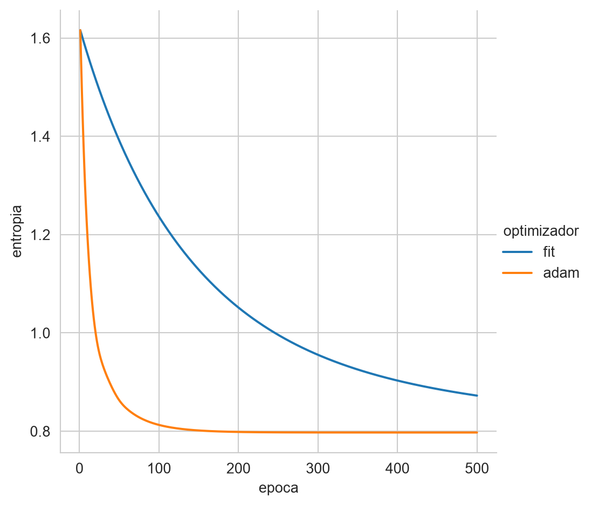
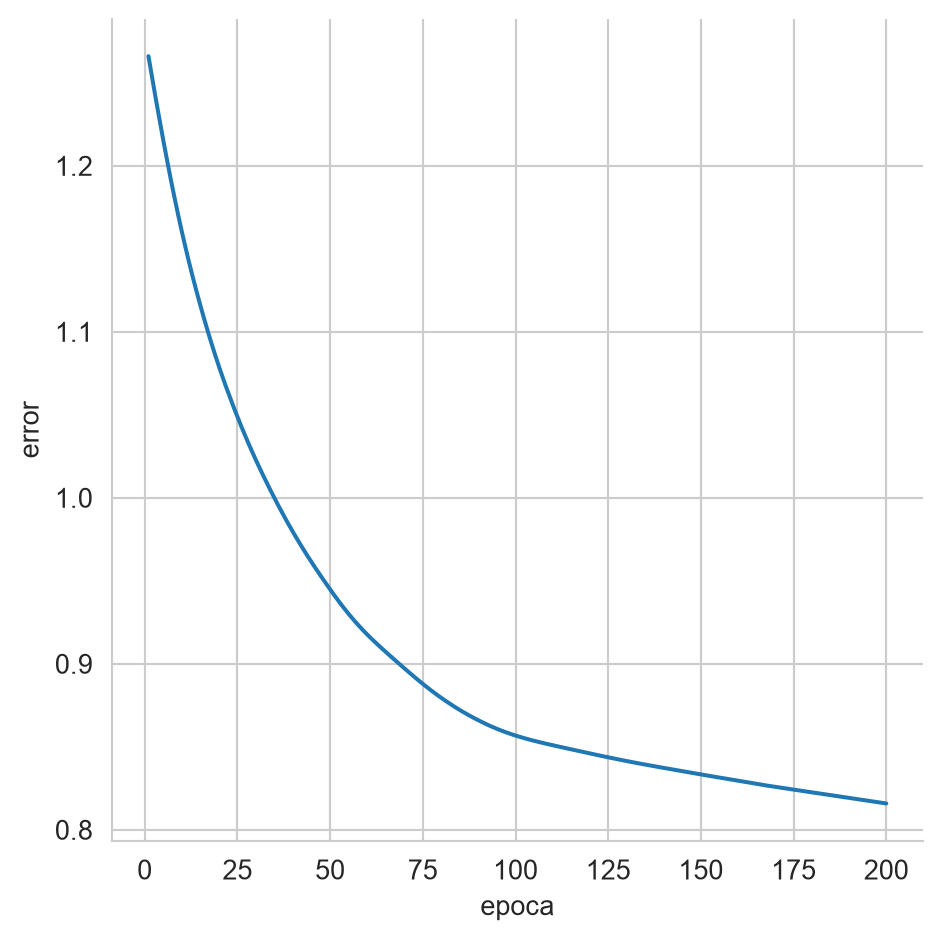
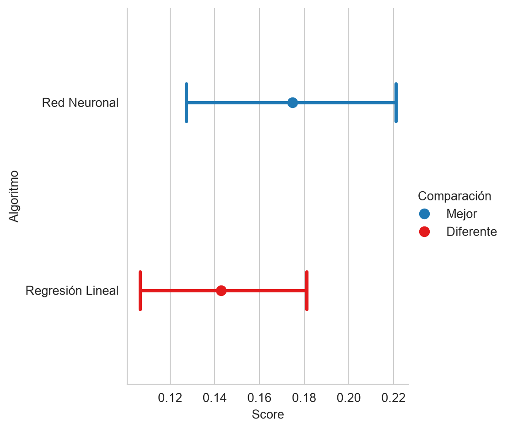
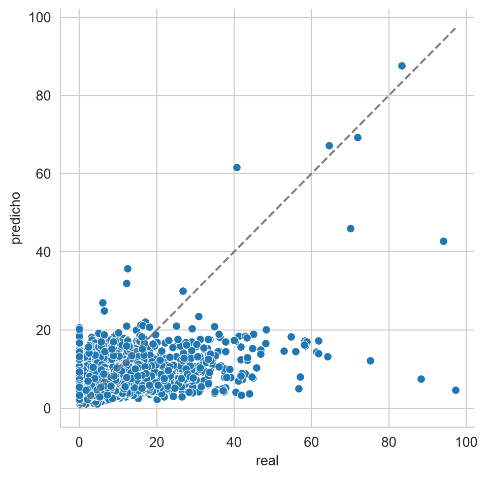
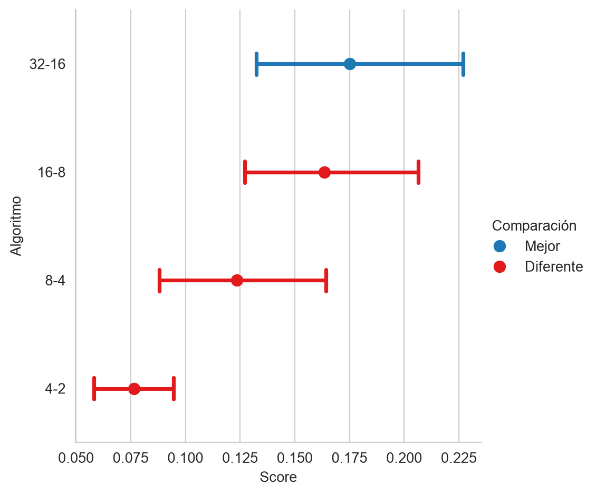

import jax
import jax.lax as lax
import jax.numpy as jnp
import optax
from CompStats.metrics import r2_score
from sklearn.linear_model import LinearRegression
from sklearn.preprocessing import StandardScaler
from sklearn.model_selection import train_test_split
from sklearn.metrics import recall_score
import numpy as np
import pandas as pd
import seaborn as sns
URL_DATOS = ('https://github.com/INGEOTEC/AprendizajeComputacional/'
'releases/download/datos-v1')12 Redes Neuronales
El objetivo de la unidad es conocer, diseñar y aplicar redes neuronales artificiales para problemas de regresión y clasificación.
12.1 Paquetes usados
12.2 Introducción
Las redes neuronales son sin duda uno de los algoritmos de aprendizaje supervisado que más han tomado auge en los últimos tiempos. Para iniciar la descripción de redes neuronales se toma de base el algoritmo de Regresión Logística (Sección 9.5) pero en el caso de múltiples clases, es decir, Regresión Logística Multinomial. Al final del capítulo se presentan un ejemplo de clasificación (Prioridad de Planteles) y uno de regresión (Sección 12.7), ambos con los datos de abandono escolar (Sección B.1.4).
12.3 Regresión Logística Multinomial
La idea de regresión logística es modelar \(\mathbb P(\mathcal Y=y \mid \mathcal X=\mathbf x)=\textsf{Ber}(y \mid \textsf{sigmoid}(\mathbf w \cdot \mathbf x + w_0)),\) es decir, que la clase \(y\) está modelada como una distribución Bernoulli con parámetro \(\textsf{sigmoid}(\mathbf w \cdot \mathbf x + w_0).\) Siguiendo esta definición que es equivalente a la mostrada anteriormente, se puede modelar a un problema de múltiples clases como \(\mathbb P(\mathcal Y=y \mid \mathcal X=\mathbf x)=\textsf{Cat}(y \mid \textsf{softmax}(W \mathbf x + \mathbf w_0)),\) es decir, que la clase proviene de una distribución Categórica con parámetros \(\textsf{softmax}(W \mathbf x + \mathbf w_0),\) donde \(W \in \mathbb R^{K \times d},\) \(\mathbf x \in \mathbb R^d\) y \(\mathbf w_0 \in \mathbb R^d.\)
La función \(\textsf{softmax}(\mathbf v)\), donde \(\mathbf v = W \mathbf x + \mathbf w_0\) está definida como:
\[ \mathbf v_i = \frac{\exp \mathbf v_i}{\sum_{j=1}^K \exp \mathbf v_j}. \tag{12.1}\]
La función jax.nn.softmax implementa \(\textsf{softmax}\); en el siguiente ejemplo se calcula para el vector [2, 1, 3]
jax.nn.softmax(np.array([2, 1, 3]))Array([0.24472848, 0.09003057, 0.66524094], dtype=float32)Se puede observar que \(\textsf{softmax}\) transforma los valores del vector \(\mathbf v\) en probabilidades.
Para seguir explicando este tipo de regresión logística se utilizará el problema de priorizar planteles para un programa de tutorías (Sección B.1.4). La variante prioridad (Sección B.1.4.1) clasifica cada secundaria en prioridad baja (\(0\)), media (\(1\)) o alta (\(2\)) según su tasa de abandono, de tal forma que el programa atienda primero a los planteles con más abandono. Los datos se leen del release datos-v1, se construye la variante y las variables indicadoras (Sección 3.2) y se parten en los conjuntos de entrenamiento (\(\mathcal T\)) y prueba (\(\mathcal G\)) con una partición estratificada y la semilla fija random_state=0. Es importante notar que las entradas están normalizadas para tener media cero y desviación estándar uno, con los parámetros calculados solamente en \(\mathcal T.\) La tasa de abandono no es una variable predictora porque con ella se define la prioridad.
educacion = pd.read_csv(f'{URL_DATOS}/sep_f911_educacion.csv.gz')
corte = educacion.tasa_abandono.quantile(0.9)
prioridad = np.where(educacion.tasa_abandono == 0, 0,
np.where(educacion.tasa_abandono > corte, 2, 1))
constantes = [c for c in educacion.columns if educacion[c].nunique() == 1]
X_e = pd.get_dummies(educacion.drop(columns=['tasa_abandono', 'clave_cct'] + constantes),
drop_first=True, dtype=float)
T, G, y_t, y_g = train_test_split(X_e.to_numpy(), prioridad,
test_size=0.2, random_state=0,
stratify=prioridad)
normalize = StandardScaler().fit(T)
D = normalize.transform(T)
G = normalize.transform(G)El conjunto tiene \(26689\) planteles y, después de convertir las variables de texto en indicadoras, \(56\) variables de entrada. La prioridad baja tiene \(26.2\%\) de los planteles, la media \(63.8\%\) y la alta \(10.0\%\).
El siguiente paso es generar el modelo de la Regresión Logística Multinomial, el cual depende de una matriz de coeficientes \(W \in \mathbb R^{K \times d}\) y \(\mathbf w_0 \in \mathbb R^d.\) Los parámetros iniciales se pueden generar con la función parametros_iniciales tal y como se muestra a continuación.
n_labels = np.unique(y_t).shape[0]
def parametros_iniciales(key=0):
key = jax.random.PRNGKey(key)
d = D.shape[1]
params = []
normal = jax.random.normal
sqrt = jnp.sqrt
for _ in range(n_labels):
key, subkey = jax.random.split(key)
_ = dict(w=normal(subkey, (d, )) * sqrt(2 / d),
w0=jnp.ones(1))
params.append(_)
return paramsUtilizando los parámetros en el formato anterior, hace que el modelo se pueda implementar con las siguientes instrucciones. Donde el ciclo es por cada uno de los parámetros de las \(K\) clases y la última línea calcula el \(\textsf{softmax}.\)
@jax.jit
def modelo(params, X):
o = []
for p in params:
o.append(X @ p['w'] + p['w0'])
return jax.nn.softmax(jnp.array(o), axis=0).TUna característica importante es que la función de pérdida, en este caso, a la Entropía Cruzada (Sección 2.3.7), requiere codificada la probabilidad de cada clase en un vector, donde el índice con probabilidad \(1\) corresponde a la clase, esto se puede realizar con el siguiente código.
y_oh = jax.nn.one_hot(y_t, n_labels)Ahora se cuenta con todos los elementos para implementar la función de Entropía Cruzada para múltiples clases, la cual se muestra en el siguiente fragmento.
@jax.jit
def media_entropia_cruzada(params, X, y_oh):
hy = modelo(params, X)
return - (y_oh * jnp.log(hy)).sum(axis=1).mean()12.3.1 Optimización
El siguiente paso es encontrar los parámetros del modelo, para esto se utiliza el método de optimización visto en Regresión Logística ( Sección 9.5) con algunos ajustes. Lo primero es que se desarrolla todo en una función fit que recibe el parámetro \(\eta\), los parámetros a identificar y el número de épocas, es decir, el número de iteraciones que se va a realizar el procedimiento.
Dentro de la función fitse observa la función update que calcula los nuevos parámetros, también regresa el valor del error, esto para poder visualizar cómo va aprendiendo el modelo. La primera línea después de la función update genera la función que calculará el valor y el gradiente de la función media_entropia_cruzada. Finalmente viene el ciclo donde se realizan las actualizaciones de los parámetros y se guarda el error calculado en cada época.
def fit(eta, params, epocas=500):
@jax.jit
def update(params, eta, X, y_oh):
_ , gs = error_grad(params, X, y_oh)
return _, jax.tree.map(lambda p, g: p - eta * g,
params, gs)
error_grad = jax.value_and_grad(media_entropia_cruzada)
error = []
for i in range(epocas):
_, params = update(params, eta, D, y_oh)
error.append(_)
return params, error12.3.2 Optimización Método Adam
Como se había visto en la Sección 9.6 existen diferentes métodos para encontrar los parámetros, en particular en esta sección se utilizará el método Adam (implementado en la librería optax) para encontrar los parámetros de la Regresión Logística Multinomial. Se decide utilizar este método dado que su uso es frecuente en la identificación de parámetros de redes neuronales.
Siguiendo la misma estructura que la función fit, la función adam recibe tres parámetros el primero es la instancia de optimizador, la segunda son los parámetros y finalmente el número de épocas que se va a ejecutar. La primera línea de la función update (que se encuentra en adam) calcula el valor de la función de error y su gradiente, estos son utilizados por optimizer.update para calcular la actualización de parámetros así como el nuevo estado del optimizador, los nuevos parámetros son calculados en la tercera línea y la función regresa los nuevos parámetros, el estado del optimizador y el error en esa iteración. La primera línea después de update inicializa el optimizador, después se genera la función que calculará el valor y gradiente de la función media_entropia_cruzada. El ciclo llama la función update y guarda el error encontrado en cada época.
def adam(optimizer, params, epocas=500):
@jax.jit
def update(params, opt_state, X, y_oh):
loss_value, grads = error_grad(params,
X,
y_oh)
updates, opt_state = optimizer.update(grads,
opt_state,
params)
params = optax.apply_updates(params, updates)
return params, opt_state, loss_value
opt_state = optimizer.init(params)
error_grad = jax.value_and_grad(media_entropia_cruzada)
error = []
for i in range(epocas):
params, opt_state, loss_value = update(params,
opt_state,
D,
y_oh)
error.append(loss_value)
return params, error12.3.3 Comparación entre Optimizadores
Los optimizadores descritos anteriormente se pueden utilizar con el siguiente código, donde la primera línea calcula los parámetros iniciales, después se llama a la función fit para encontrar los parámetros con el primer método. La tercera línea genera una instancia del optimizador Adam; el cual se pasa a la función adam para encontrar los parámetros con este método.
params = parametros_iniciales()
p1, error1 = fit(1e-2, params)
optimizer = optax.adam(learning_rate=1e-2)
p2, error2 = adam(optimizer, params)La Figura 12.1 muestra cómo la media de la Entropía Cruzada se minimiza con respecto a las épocas para los dos métodos. En la época \(50\) la Entropía Cruzada es \(1.3912\) con fit y \(0.8630\) con adam, y al final de las \(500\) épocas es \(0.8725\) y \(0.7974\), respectivamente. Se puede observar cómo el método adam converge más rápido y llega a un valor menor de Entropía Cruzada.
Código
df = pd.DataFrame(dict(entropia=np.array(error1),
optimizador='fit',
epoca=np.arange(1, 501)))
df = pd.concat((df, pd.DataFrame(dict(entropia=np.array(error2),
optimizador='adam',
epoca=np.arange(1, 501)))))
_ = sns.relplot(data=df, x='epoca', y='entropia', hue='optimizador', kind='line')
Finalmente la exactitud (Sección 2.3.2) en el conjunto de entrenamiento del modelo estimado con fit es \(0.6391\) (i.e., (y_t == modelo(p1, D).argmax(axis=1)).mean()) y del estimado con adam es \(0.6484\).
12.4 Perceptrón
La unidad básica de procesamiento en una red neuronal es el perceptrón, el cual es un viejo conocido de Discriminantes Lineales (Capítulo 8), es decir, \(g(\mathbf x) = \mathbf w \cdot \mathbf x + \mathbf w_0.\) En problemas de clasificación binaria se encuentran los parámetros de \(g(\mathbf x)\) de tal manera que genera un hiperplano y se clasifican los elementos de acuerdo al lado positivo o negativo del hiperplano. En problemas de Regresión (Sección 3.3) los parámetros de \(g(\mathbf x)\) se encuentran utilizando mínimos cuadrados.
En el caso de tener \(K>2\) clases entonces el problema se puede afrontar entrenando \(g_k(\mathbf x)\) perceptrones (\(k=1, \ldots, K\)) tal y como se realizó Discriminantes Lineales (Sección 8.3.3). De manera concisa se puede definir a \(g: \mathbb R^d \rightarrow \mathbb R^K\), es decir, \(g(\mathbf x)=W \mathbf x + \mathbf w_0\) tal y como se realizó en Regresión Logística Multinomial (Sección 12.3). En el caso de desear conocer la probabilidad de pertenencia a una clase, en el caso binario se utilizó \(g(\mathbf x) = \textsf{sigmoid}(\mathbf w \cdot \mathbf x + \mathbf w_0)\) y en el caso multiclase \(g(\mathbf x) = \textsf{softmax}(W \mathbf x + \mathbf w_0).\)
12.4.1 Composición de Perceptrones Lineales
Se puede realizar una composición de perceptrones de la siguiente manera, sea \(g_1: \mathbb R^d \rightarrow \mathbb R^{d'}\) y \(g_2: \mathbb R^{d'} \rightarrow \mathbb R^K,\) es decir \(g = g_2 \circ g_1.\) Realizando esta composición en las ecuaciones descritas anteriormente se tiene
\[ \begin{split} \hat{\mathbf{y}}_1 &= g_1(\mathbf x) \\ \hat{\mathbf y} &= g_2(\hat{\mathbf{y}}_1) \end{split} \]
Expandiendo las ecuaciones anteriores se tiene
\[ \begin{split} \hat{\mathbf{y}}_1 &= W_1 \mathbf x + \mathbf w_{1_0}\\ \hat{\mathbf y} &= W_2 \hat{\mathbf{y}}_1 + \mathbf w_{2_0}\\ &= W_2 (W_1 \mathbf x + \mathbf w_{1_0}) + \mathbf w_{2_0}\\ &= W_2 W_1 \mathbf x + W_2 \mathbf w_{1_0} + \mathbf w_{2_0}\\ &= W \mathbf x + \mathbf w_0 \end{split} \]
como se puede observar la composición realizada da como resultado una red donde se tienen que identificar \(W \in \mathbb R^{K \times d}\) y \(\mathbf w_0 \in \mathbb R^d,\) es decir, son \(K\) perceptrones equivalentes al modelado de Regresión Logística Multinomial. Esto es porque la composición fue con funciones lineales.
12.5 Perceptrón Multicapa
Para evitar que la composición de perceptrones colapse a una función equivalente, es necesario incluir una función no lineal, sea \(\phi\) esta función no lineal, (a esta función se le conoce como función de activación) entonces se puede observar que la composición \(g=g_2 \circ g_1\) donde \(g_1 = \phi(W_1 \mathbf x + \mathbf w_{1_0})\) resulta en
\[ \begin{split} \hat{\mathbf{y}}_1 &= \phi(W_1 \mathbf x + \mathbf w_{1_0}) \\ \hat{\mathbf y} &= W_2 \hat{\mathbf{y}}_1 + \mathbf w_{2_0} \end{split}. \]
A la estructura anterior se le conoce como una red neuronal de una capa oculta, la salida de la capa oculta está en \(\hat{\mathbf{y}}_1\) y la salida de la red es \(\hat{\mathbf y}.\) Siguiendo la notación anterior se puede definir una red neuronal con dos capas ocultas de la siguiente manera
\[ \begin{split} \hat{\mathbf{y}}_1 &= \phi(W_1 \mathbf x + \mathbf w_{1_0}) \\ \hat{\mathbf y}_2 &= \phi_2(W_2 \hat{\mathbf{y}}_1 + \mathbf w_{2_0})\\ \hat{\mathbf y} &= (W_3 \hat{\mathbf{y}}_2 + \mathbf w_{3_0}) \end{split}, \]
donde la salida de la primera capa oculta (\(\hat{\mathbf{y}}_1\)) es la entrada de la segunda capa oculta y su salida (\(\hat{\mathbf{y}}_2\)) se convierte en la entrada de la capa de salida.
12.5.1 Desvanecimiento del Gradiente
Por lo expuesto hasta el momento se podría pensar que una candidata para ser la función \(\phi\) es la función \(\textsf{sigmoid},\) aunque esto es factible, esta presenta el problema de desvanecimiento del gradiente. Para ejemplificar este problema, se utilizan dos funciones \(g_1(x) = w_1 x + 1.0\) y \(g_1(x) = w_2 x + 1.0;\) haciéndose la composición de estas dos funciones \(g=g_2 \circ g_1.\)
Las siguientes instrucciones implementan las funciones anteriores utilizando la librería JAX.
@jax.jit
def g_1(params, x):
return jax.nn.sigmoid(params['w1'] * x + 1.0)
@jax.jit
def g_2(params, x):
return jax.nn.sigmoid(params['w2'] * x + 1.0)
@jax.jit
def g(params, x):
return g_2(params, g_1(params, x))Utilizando unos parámetros aleatorios generados con el siguiente código
key = jax.random.PRNGKey(0)
key, subkey1, subkey2 = jax.random.split(key, num=3)
params = dict(w1=jax.random.normal(subkey1),
w2=jax.random.normal(subkey2))se tiene que la derivada de \(g_1\) con respecto a \(w_1\) (i.e., jax.grad(g_1)(params, 1.0)) y \(g_2\) con respecto a \(w_2\) (i.e., jax.grad(g_2)(params, 1.0)) es 0.1418 y 0.1171, respectivamente. El problema viene cuando se calcula \(\frac{\partial g}{\partial w_1}\) en este caso se observa que el gradiente es pequeño comparado con el gradiente obtenido en \(\frac{d g}{d w_1},\) i.e., jax.grad(g)(params, 1.0), donde se observa que el gradiente para \(w_1\) corresponde a 0.0157, el gradiente de \(w_2\) sigue en la misma magnitud teniendo un valor de 0.1077.
El problema de desvanecimiento de gradiente, hace que el gradiente disminuya de manera exponencial, entonces los pesos asociados a las capas alejadas de la capa de salida reciben un gradiente equivalente a cero y no se cuenta con información para actualizar sus pesos. Por este motivo es recomendable utilizar funciones de activación que no presenten esta característica, una muy utilizada es \(\textsf{ReLU}(x) = \max(0, x)\).
12.6 Ejemplo: Prioridad de Planteles
Para ejemplificar el uso de una red neuronal en un problema de clasificación se continúa con el problema de priorizar planteles para un programa de tutorías, que es el mismo que se utilizó para la regresión logística multinomial, lo que permite comparar los dos modelos. Se utiliza la misma partición en entrenamiento (\(\mathcal T\)) y prueba (\(\mathcal G\)) y las mismas entradas normalizadas, es decir, T, G, y_t y y_g. Un procedimiento necesario en redes neuronales es que los datos estén normalizados, tradicionalmente esto se realiza haciendo que los datos tengan media cero y desviación estándar uno. Los parámetros de la normalización se encontraron en el conjunto de entrenamiento y se aplicaron tanto al conjunto de entrenamiento como al de prueba. La matriz D es la versión normalizada de T y la siguiente instrucción la asigna a T, que es el nombre que se usa en el resto del ejemplo.
T = DComo se realizó previamente es necesario convertir las clases de salida para que cada ejemplo sea un vector unitario donde el índice con el valor \(1\) representa la clase, esto se realiza con las siguientes instrucciones.
n_labels = np.unique(y_t).shape[0]
yt_oh = jax.nn.one_hot(y_t, n_labels)Es momento de decidir la estructura de la red neuronal, las únicas dos restricciones es que la primera capa tiene que tener la dimensión del vector de entrada, en este caso corresponde a \(56\) (T.shape[1]) y la última capa tiene que tener de salida el número de clases, en este caso \(3\) (n_labels), el resto de las capas ocultas pueden tener cualquier valor solamente es necesario que las dimensiones sean coherentes con la operación que se va a realizar.
La red que se va a implementar es la siguiente, donde \(d\) es la dimensión del vector de entrada y \(K\) es el número de clases. Como super-índice se encuentran las dimensiones para que sea más fácil seguir la estructura de la red.
\[ \begin{split} \hat{\mathbf{y}}_1^{32} &= \phi(W^{32\times d} \mathbf x^{d} + \mathbf w_{1_0}^{32})\\ \hat{\mathbf{y}}_2^{16} &= \phi(W^{16\times 32} \hat{\mathbf{y}}_1^{32} + \mathbf w_{2_0}^{16})\\ \hat{\mathbf{y}}^{K} &= W^{K\times 16} \hat{\mathbf{y}}_2^{16} + \mathbf w_{3_0}^{K} \end{split} \]
Considerando que las entradas se encuentran en una matriz \(X^{N\times d},\) entonces se puede definir esta estructura en términos de multiplicación de matrices, lo cual queda como
\[ \begin{split} \hat{Y}_1^{N\times 32} &= \phi(X^{N\times d} W^{d\times 32} + \mathbf w_{1_0}^{32})\\ \hat{Y}_2^{N\times 16} &= \phi(\hat{Y}_1^{N\times 32} W^{32\times 16} + \mathbf w_{2_0}^{16})\\ \hat{Y}^{N\times K} &= \hat{Y}_2^{N\times 16} W^{16\times K} + \mathbf w_{3_0}^{K}\\ \end{split}, \]
donde la suma con el término \(\mathbf w_0\) se realiza en la dimensión que corresponde y se replica tantas veces para cumplir con la otra dimensión. Esta configuración se puede expresar en una lista como la que se muestra a continuación.
d = [T.shape[1], 32, 16, n_labels]Utilizando esta notación los parámetros iniciales de la red se pueden generar con la siguiente función, se puede observar cómo el ciclo está iterando por los elementos de d creando pares, para generar las dimensiones adecuadas para las matrices \(W.\)
def parametros_iniciales(d, key=0):
key = jax.random.PRNGKey(key)
params = []
for init, end in zip(d, d[1:]):
key, subkey1, subkey2 = jax.random.split(key, num=3)
_ = dict(w=jax.random.normal(subkey1, (init, end)) * jnp.sqrt(2 / (init * end)),
w0=jax.random.normal(subkey2, (end, )) * jnp.sqrt(2 / end))
params.append(_)
return paramsHabiendo generado los parámetros iniciales de la red, es momento para implementar la red, la siguiente función implementa la red, se puede observar cómo se realizan las operaciones matriciales tal y como se mostraron en las ecuaciones anteriores. La función de activación \(\phi\) seleccionada fue \(\textsf{ReLU}\) que está implementada en la función jax.nn.relu.
@jax.jit
def ann(params, D):
y1 = jax.nn.relu(D @ params[0]['w'] + params[0]['w0'])
y2 = jax.nn.relu(y1 @ params[1]['w'] + params[1]['w0'])
return y2 @ params[2]['w'] + params[2]['w0']Como medida de error se usa la Entropía Cruzada (Sección 2.3.7) tal y como se implementa a continuación. El caso \(0 \log 0\) corresponde a un valor no definido lo cual genera que el valor de la función tampoco esté definido, para proteger la función en ese caso se usa jnp.nansum que trata los valores no definidos como ceros.
@jax.jit
def media_entropia_cruzada(params, D, y_oh):
hy = jax.nn.softmax(ann(params, D), axis=1)
return - jnp.nansum(y_oh * jnp.log(hy), axis=1).mean()En esta ocasión se utiliza el optimizador Adam, tal y como se muestra en la siguiente función. La única diferencia con respecto al visto previamente es la función update_finite que actualiza los parámetros siempre y cuando el nuevo valor sea un valor numérico, de lo contrario se queda con el valor anterior.
def adam(optimizer, params, epocas=500):
@jax.jit
def update_finite(a, b):
m = jnp.isfinite(b)
return jnp.where(m, b, a)
@jax.jit
def update(params, opt_state, X, y_oh):
loss_value, grads = error_grad(params, X, y_oh)
updates, opt_state = optimizer.update(grads, opt_state, params)
params = optax.apply_updates(params, updates)
return params, opt_state, loss_value
opt_state = optimizer.init(params)
error_grad = jax.value_and_grad(media_entropia_cruzada)
error = []
for i in range(epocas):
p, opt_state, loss_value = update(params, opt_state, T, yt_oh)
params = jax.tree.map(update_finite, params, p)
error.append(loss_value)
return params, errorFinalmente, la red creada se entrena utilizando las siguientes instrucciones, donde la primera línea genera los parámetros iniciales, después se inicializa el optimizador y en la línea final se llama al optimizador con los parámetros y número de épocas.
params = parametros_iniciales(d)
optimizer = optax.adam(learning_rate=1e-2)
p, error = adam(optimizer, params, epocas=500)El resultado de esta red, es que el error en el conjunto de prueba es \(0.3722\) calculado con la siguiente instrucción (ann(p, G).argmax(axis=1) != y_g).mean(). La regresión logística multinomial del inicio del capítulo (el modelo modelo con los parámetros p2 encontrados con Adam), que resuelve el mismo problema con el mismo conjunto de prueba, tiene un error de \(0.3569\), es decir, el error de la red no es menor que el de la regresión logística. Como referencia, un clasificador que siempre responde la clase más frecuente tendría un error de \(0.3619\), por lo que el mejor de los dos modelos tiene un error menor que ese valor. Dado que la prioridad alta es la clase minoritaria, también se mide la cobertura promedio (macro-recall), que es \(0.4054\) para la red y \(0.3760\) para la regresión logística.
12.7 Ejemplo: Abandono Escolar
Para ejemplificar el uso de una red neuronal en un problema de regresión se utilizan los datos de Educación (Sección B.1.4), donde se desea predecir la tasa de abandono escolar de cada secundaria a partir de sus variables observables, con el fin de decidir qué planteles apoyar primero. Se utiliza la misma matriz de diseño X_e del ejemplo anterior y se parte en los conjuntos de entrenamiento y prueba con las siguientes instrucciones. Se fija la semilla (random_state=0) para que la partición sea la misma en cada ejecución.
y = educacion['tasa_abandono'].to_numpy()
T, G, y_t, y_g = train_test_split(X_e.to_numpy(), y, test_size=0.2, random_state=0)Al igual que en el ejemplo anterior, las entradas se normalizan para que tengan media cero y desviación estándar uno; los parámetros de la normalización se encuentran únicamente en el conjunto de entrenamiento (T) y se aplican tanto a T como a G.
normalize = StandardScaler().fit(T)
T = normalize.transform(T)
G = normalize.transform(G)En regresión también conviene normalizar la variable dependiente. Los valores de \(y\) se encuentran en una escala muy distinta a la de las entradas, mientras que la red se inicializa para producir salidas cercanas a cero. Por este motivo, la red se entrena para predecir la variable dependiente normalizada con la media y la desviación estándar del conjunto de entrenamiento, y sus predicciones se regresan a la escala original antes de medir el rendimiento. Las siguientes instrucciones calculan estos dos valores y la variable dependiente normalizada de entrenamiento.
mu, sigma = y_t.mean(), y_t.std()
yt_n = (y_t - mu) / sigmaLa estructura de la red es la misma que en el ejemplo de Prioridad de Planteles, con dos capas ocultas y función de activación \(\textsf{ReLU}\). La diferencia está en la capa de salida. En clasificación tenía una neurona por clase y las salidas pasaban por \(\textsf{softmax}\) para interpretarse como probabilidades, mientras que en regresión se predice un único número, por lo que la última capa tiene una sola neurona y su salida se utiliza tal cual, es decir, no se le aplica ninguna función. La estructura \(\mathbb R^{d} \rightarrow \mathbb R^{32} \rightarrow \mathbb R^{16} \rightarrow \mathbb R\), donde \(d\) es el número de columnas de la entrada, queda representada en la siguiente lista.
d = [T.shape[1], 32, 16, 1]Se observa que la única restricción para la primera capa es que tenga la dimensión del vector de entrada, que en este caso es \(56\) (T.shape[1]), y que la última capa tiene dimensión \(1\) porque se predice un único valor.
Los parámetros iniciales (parametros_iniciales) y la red (ann) son los mismos que se definieron en el ejemplo de Prioridad de Planteles. La función ann regresa una matriz con una sola columna, por lo que en la función de pérdida se aplica flatten para obtener un vector. Como medida de error se utiliza el error cuadrático medio (Ecuación 2.4), que es la función que se minimiza en regresión (Sección 3.3).
@jax.jit
def media_error_cuadratico(params, D, y):
return ((ann(params, D).flatten() - y) ** 2).mean()El optimizador es Adam, igual que en el ejemplo anterior. La función adam_regresion sigue la misma estructura que adam; las diferencias son que la función de error es media_error_cuadratico y que los datos de entrenamiento se reciben como parámetros (X y y) en lugar de estar fijos en la función.
def adam_regresion(optimizer, params, X, y, epocas=500):
@jax.jit
def update_finite(a, b):
m = jnp.isfinite(b)
return jnp.where(m, b, a)
@jax.jit
def update(params, opt_state, X, y):
loss_value, grads = error_grad(params, X, y)
updates, opt_state = optimizer.update(grads, opt_state, params)
params = optax.apply_updates(params, updates)
return params, opt_state, loss_value
opt_state = optimizer.init(params)
error_grad = jax.value_and_grad(media_error_cuadratico)
error = []
for i in range(epocas):
p, opt_state, loss_value = update(params, opt_state, X, y)
params = jax.tree.map(update_finite, params, p)
error.append(loss_value)
return params, errorLa red se entrena con las siguientes instrucciones, que primero generan los parámetros iniciales, después inicializan el optimizador y finalmente llaman a adam_regresion con los datos de entrenamiento normalizados. Es importante notar que entrenar durante demasiadas épocas puede hacer que la red se ajuste al ruido del conjunto de entrenamiento (sobreajuste). Por ello, en este ejemplo se utiliza una tasa de aprendizaje pequeña y un número moderado de épocas. El número de épocas es un hiperparámetro que se puede seleccionar con un conjunto de validación (Sección 2.5).
params = parametros_iniciales(d)
optimizer = optax.adam(learning_rate=1e-3)
p, error = adam_regresion(optimizer, params, T, yt_n, epocas=200)La Figura 12.2 muestra cómo el error cuadrático medio (calculado sobre la variable dependiente normalizada) disminuye conforme avanzan las épocas.
Código
df = pd.DataFrame(dict(error=np.array(error),
epoca=np.arange(1, len(error) + 1)))
_ = sns.relplot(data=df, x='epoca', y='error', kind='line')
Para medir el rendimiento en el conjunto de prueba, las predicciones de la red se regresan a la escala original, es decir, se multiplican por la desviación estándar sigma y se suma la media mu. Como referencia se ajusta una regresión lineal (Sección 3.3) con los mismos datos de entrenamiento y se obtienen sus predicciones en el conjunto de prueba.
hy_ann = np.array(ann(p, G).flatten()) * sigma + mu
hy_lr = LinearRegression().fit(T, y_t).predict(G)El rendimiento se mide con el coeficiente de determinación \(R^2\) (Ecuación 2.7) implementado en CompStats, tal y como se hizo en Sección 2.4. La siguiente instrucción calcula el \(R^2\) de la red neuronal en el conjunto de prueba; el parámetro name es el nombre con el que aparecerá la red en las comparaciones.
r2 = r2_score(y_g, hy_ann, name='Red Neuronal', use_tqdm=False)El \(R^2\) de la red neuronal es \(0.1755\) con un error estándar de \(0.0244.\) Para compararla con la regresión lineal se agregan sus predicciones al mismo objeto y se grafican, el resultado se muestra en la Figura 12.3.
r2(hy_lr, name='Regresión Lineal')
r2.plot(comp_legend='Comparación',
winner_legend='Mejor',
tie_legend='Equivalente',
loser_legend='Diferente',
alg_legend='Algoritmo',
var_name='Rendimiento')
En la figura se observa el \(R^2\) de cada algoritmo con su intervalo de confianza, estimado mediante bootstrap. La figura también indica cuál es el algoritmo con el mejor rendimiento (Mejor) y, para el otro algoritmo, si su rendimiento es estadísticamente equivalente (Equivalente) o diferente (Diferente) con respecto al mejor. El \(R^2\) de la regresión lineal es \(0.1433\) con un error estándar de \(0.0193.\)
Finalmente, la Figura 12.4 muestra el valor real contra el valor predicho por la red neuronal en el conjunto de prueba, la línea punteada es la identidad, es decir, las predicciones perfectas.
Código
df = pd.DataFrame(dict(real=y_g, predicho=hy_ann))
g = sns.relplot(data=df, x='real', y='predicho')
lim = [df.min().min(), df.max().max()]
g.ax.plot(lim, lim, linestyle='--', color='gray')
TipActividad
Comparar el rendimiento (\(R^2\)) en el conjunto de prueba de redes neuronales con diferente número de neuronas en las capas ocultas, i.e., modificando los valores \(32\) y \(16\) de la lista d, tal y como se muestra en la Figura 12.5. Utilizar los mismos datos de abandono escolar, la misma partición y el mismo procedimiento de entrenamiento descrito en esta sección. El rendimiento se compara con CompStats.

12.8 Resumen
Una red neuronal se construye componiendo funciones simples. La regresión logística multinomial (Sección 12.3) es el punto de partida, y el perceptrón (Sección 12.4) es una unidad que calcula una combinación lineal de las entradas. Componer perceptrones lineales no agrega capacidad, y por eso el perceptrón multicapa incluye una función de activación no lineal. La elección de esa función importa, pues algunas provocan el desvanecimiento del gradiente que impide entrenar redes profundas. Los parámetros se ajustan con las herramientas de Capítulo 9, y el método Adam (Sección 12.3.2) es un ejemplo de regla de actualización que suele converger más rápido que el descenso por gradiente simple. El mismo marco sirve para clasificación y para regresión (Sección 12.7).
La flexibilidad de las redes exige disciplina en la evaluación. La arquitectura y los hiperparámetros se deben validar fuera de muestra con los procedimientos de Capítulo 2, porque una red con suficientes parámetros puede ajustar casi cualquier conjunto de entrenamiento.
Con este capítulo termina el aprendizaje supervisado. Queda la pregunta de qué hacer cuando no se tiene una variable respuesta y solo se quiere entender la estructura de los datos, lo que empieza con la reducción de dimensión en Capítulo 13.